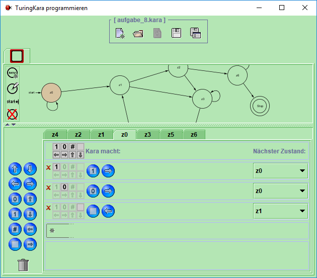
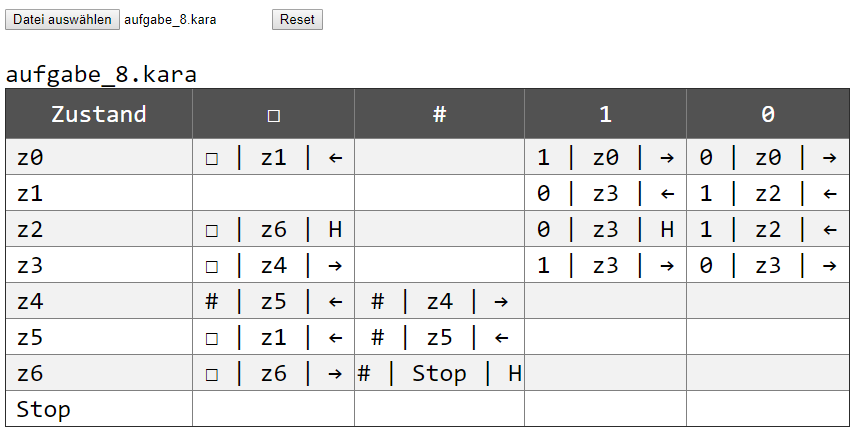

TuringKara ist eine Software zur Simulation ein- / zweidimensionaler Turingmaschinen. Die erstellte Turingmaschine wird in Form eines Graphen dargestellt. Eine Ausgabe als Turingtabelle innerhalb von TuringKara ist nicht möglich.
Zum Erzeugen einer Turingtabelle einfach die entsprechende .kara-Datei mit einem Klick auf "Datei auswählen" öffnen.
